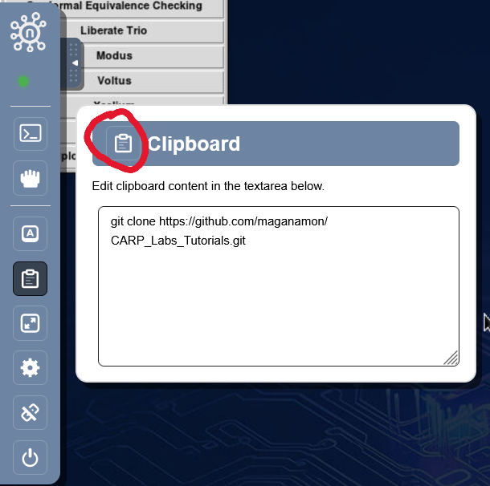
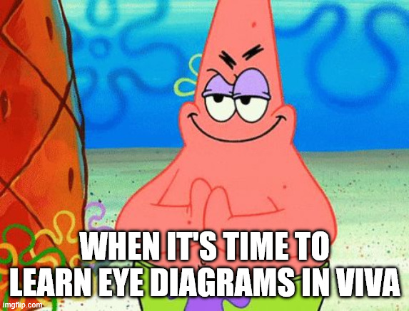
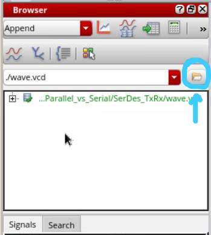
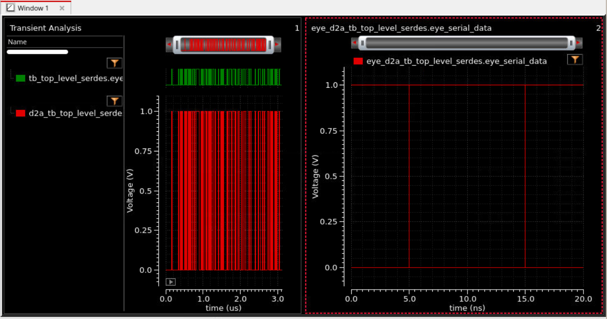

Lab 1 SERDES: Cadence Basics
The premise of this lab is for you to:
Get you used to using Cadence Simulation
View an Eye Diagram
You will find that there are some similarities to Vivado.
There are some annoyances with the copy / paste, but I'll show you how to deal with that.
Pre-requisites
- Go get access to the Cadence tools
Create an account using your school email at nanhub.org
Go to: https://nanohub.org/groups/cadence_access and request access
Wait to be accepted
Let's Get Started
- My entry is always:
https://nanohub.org/groups/cadence_access
Click on Digital Implementation
Now. Before we start, on the Top Right click on Go to Access Wave this will open the Cadence Tools in a new tab in a Windowed Full Screen. (A lot more pleasent to look at)
Open the Left menu bar. You'll find the clipboard tab as well.
Open a Terminal if there's not already one open.
There's 2 ways to import the folder you need
- Git Clone (Easy)
You will use the clipboard tab
- Create a Zip-File of the Folder and import it
You will need to move the folder once you import it
For when youi have a local folder and don't want to make a github repo
We'll be using the Git Clone method.
You won't be able to ctrl + v into the terminal.
Paste what you want into the box and click the clipboard icon on the top left.

- Use:
git clone https://github.com/maganamon/CARP_Labs_Tutorials.git
You will only need the SerDes_Labs Directory
- I have a bunch of useless folders and files so you can get rid of them with:
rm -rf FOLDER_NAME
rm FILE_NAME
- Now cd chain yourself all the way to:
SerDes_Labs -> Lab1_Parrallel_vs_Serial -> SerDes_TxRx
- Now we're going to open Xcelium using the terminal with:
Make sure it's all 1 line. I split it for website formating reasons.
xrun -64bit -sv -access +rwc -gui -top tb_top_level_serdes Serializer_tx.sv Deserializer_rx.sv
top_level_serdes.sv tb_top_level_serdes.svThe file after -top indicates the toplevel module.
All other listed files are the modules that the top level will need.
I have already written a basic Serializer and Deserializer then had ChatGPT write the Testbench.
Congrats
The simulation should now be open.
What we will learn
Sim Console "run XXXns"
Moving by Edge
Under "Cursor" tab. Changing Radix
Follow the Hex 55 Example
Colors, Groups, Dividers
Search for Values
Eye Diagram Time

Virtuoso: ViVa where ViVA stands for Virtuoso Visualization and Analysis Tool
- Open Up that Bash Terminal again and run:
viva &
Give it a minute cause that 'ish is slow
Click the Folder Icon on the Left under the Browser tab.

Expand the folder on the botton until you get to the Top_Level Folder.
Click it, and look for the serial_data signal. Double Click the Signal.
You should see the signal and a bunch of 0 and 1 wave forms.
Click the Measurements tab at the very top
Then click Digital to Analog
Logic High: 1 V Logic Low: 0 V Rise Time: 1ps Fall Time: 1ps
We have created essentially a perfect circuit with these parameters.
Click the Measurements tab again at the very top
Then click Eye Diagram
Unit Interval for 100Mhz Clk = 10ns
The Unit Interval tells Cadence how often to chop up the waveform and overlay them on top on each other
Finally click plot eye
You should see something like this:

On the Right is the eye diagram, and on the left the Analog signal (When we went from Digital to Analog)
notice... That doesn't look like an eye? Why is that?
That's all for today. Lab 2 we'll see the real eye diagram.